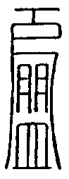
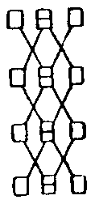

大正新脩大藏經 第21冊
No.1275 聖歡喜天式法 (1卷)
【唐 般若惹羯羅撰】
第 1 卷
No. 1275
聖歡喜天式法
若於聖天法大欲開靈驗者。先造立天地盤。則天盤長三寸又四寸。地盤長方七寸。以有乳木及香木。一日之內造之。天地共以白木作之。造畫時不可見下劣之人。必必精進潔齋。以吉日為之。依通法擇日。合耳一頭天盤圓作。觀東方安葉上唵字。即變成日王歡喜天。頭上在日輪於俗形而有瞋相。面容赤色。右手持吠瑠璃收胸上。左手持獨股收左腰。摧壞部主名無憂大將。被七阿僧祇眷屬圍繞。居青石上。
南方葉上觀爾字。即變為愛王歡喜天。似法師形。及其鼻胸下如面目矢。右手持團餅安結跏上。左手持蘿富根舉左肩間。野干部主名象頭大將。十八俱胝被眷屬圍繞。居赤石上。
西方葉上觀頡哩字。即變為月愛歡喜天。其形美女也。頭有花鬘。右手持寶鏡。左手支頰。以寶篋為□足。端正殊妙色。一牙部主名嚴髻大將。一百四千俱胝眷屬被圍繞。座虎皮上。
北方葉上觀忙字。即變議特歡喜天。其形青色如憍尸迦天。左右手各作刀印。收各方腰。龍象部主名頂行大將。一俱胝那臾多眷屬圍繞踞黑石。
次明地盤眾。東方安帝釋天。東南方安火天。南方安炎魔天。西南方安羅剎天。西方安水天。西北方安風天。北方安毘沙門天。東北方安大自在天。安廿八宿卅六禽。如是次第建立之矣。天盤四天皆一體也。非異體者。若中□亦安多波天無妨礙。
次召請印 以二小指二無名指相鉤向內。以二中指立相叉。又以二頭指各竪付中指。以二大指亦竪付近頭指側。大指去來。明曰(四天通用)。
唵簸迦羅(二合)主拏禰(去)縛哆野(二合)
次用普印伴呪曰。
次地盤眾等召請印。作帝殊羅施印。以二小指二無名指叉於掌內竪。二中指頭相捻。以二頭指各加中指背節下半分。大指來去。呪曰。
唵(一)鑠都嚕(二)波羅摩馱儞曳(三)莎訶(通八方天)
次二十八宿三十六禽召請印(用輪壇印通)呪曰。
唵知里安疑嚕儞曳莎訶
富順愛神相合部類宴坐引入伴族一億二億一切諸頭頭契來入入入娑婆呵
次次供養契印。悉求他之中(云云)。
盛冥文符(裏某甲耳)
祕攝符(固對表畫斷也)
右欲望官位爵祿者。以日輪天加帝釋天。
若欲令他熱病者。以日輪天加火天王。
若欲得福德者。以月愛天加毘沙門天祈之。
若欲得人心遂吾思者。以議特天加炎魔天。
若欲得他人財寶者。以月愛天加大自在天。
欲令他人風病者。以議特天加風天祈之。
欲止長血赤痢者。以日輪天加帝釋天祈申。
欲止雨降難者。以愛王天加帝釋天。
欲止旱魃降雨者。以議特天加水天王。
欲止腹病頭病者。以日輪天加炎魔天。
欲遂論議決[儷-鹿+木]者。以日輪天加大自在。呼二十八宿等。
欲付公私遂所聖事者。以愛王天加帝釋天。
欲得愜年穀者。以議特天加帝釋天。
欲家內靜者。以愛王天加毘沙門天。
欲止口舌事者。以愛王天加自在天。
欲止物怪惡夢者。以日輪天加炎魔天。
如是一一合法對祈申。所念之事必成就。對時誦根本呪印(云云)。
次結三部護身印明依諸通印。
都合攝鉤印。二手內縛置頂上散。呪曰。
唵薩羅薩羅天地都合禁禁吽吽跘
次結對印不動謁哦印。呪曰。
吽吽吉儞吉儞吽泮(半音)娑婆呵
次以糸對之。呪曰。
唵乞曳曳曳吽
聖天式法一卷
(附)
同天次第一卷
先淨三業印真言 次護身真言印 次向建受三度建吞之 次天鼓三七返 次向本尊禮三返 次著座 次塗香淨手 次加持灑水散壇上并供物及室內悉令清淨 次表白事由 次神分祈願 次大金剛輪真言印 次輪壇真言印 次勝悉地真言印 次三部三昧心真言印 次三刀偈 次如來拳印 次道場觀 次天盤聖眾勸請明印 次天盤伴天印 次地盤眾勸請明印 次地盤伴天印 次二十八宿并三十六禽明印 次地申明印 次避除結界明印 次玉女真言印(但申次用之) 次示三昧耶明印 次閼伽明印 次花座明印 次善來偈 次閼伽明印 次塗香明印 次花供印 次燒香明印 次飲食燈明印 次普供養明印 次大金剛輪明印 次合掌誦天盤眾二十八宿三十六禽名號三返 次誦七星并九天名號二返 次三部三昧耶心明印 次地結明印 次方隅界明印 次上方結界明印 次對印明 若以糸對盤或不然 次護身真言印 次取珠三迴香盤置本處 次結根本印 取珠念誦任意要天呪 次念誦了去珠在本處 次左方塗香 次花塗燒飲燈 次普供養 次祈願 次閼伽 次迴向 次結界 次奉送 次三部護身印明 次出堂
聖天次第一卷
一交了 興然之本